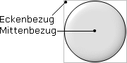

Hilfe
HandleImage


Aufruf
Parameter
Rückgabewert
Beschreibung
Beispiel
Siehe auch
HandleImage bild, x, y
Parameter
| bild |
Identität eines Bildes (z.B. mit LoadImage ermittelt) ermittelt)
|
| x | Verschiebung in X-Richtung |
| y | Verschiebung in Y-Richtung |
Rückgabewert
-
Beschreibung
Dieser Befehl wird dazu verwendet, den Bezugspunkt eines Bildes zu ändern. Normalerweise ist der Bezugspunkt immer oben/links. Benutze auch AutoMidHandle sowie MidHandle, um ein Bild (automatisch) zu zentrieren.
Wird ein Animationsbild mit mehreren Frames verwendet, so wird der Bezugspunkt für alle Einzelbilder geändert. Man kann nicht für jedes Einzelbild einen anderen Bezugspunkt wählen!

Beispiel
Standardbeispiel:
Dieses Programm lädt ein Bild und setzt den Bezugspunkt:
Graphics 640, 480, 16, 1
Bild = LoadImage("Bild.bmp")
HandleImage Bild, 20, 20
DrawImage Bild 0, 0
WaitKey()
End
Graphics 640, 480, 16, 1
Bild = LoadImage("Bild.bmp")
HandleImage Bild, 20, 20
DrawImage Bild 0, 0
WaitKey()
End
Siehe auch